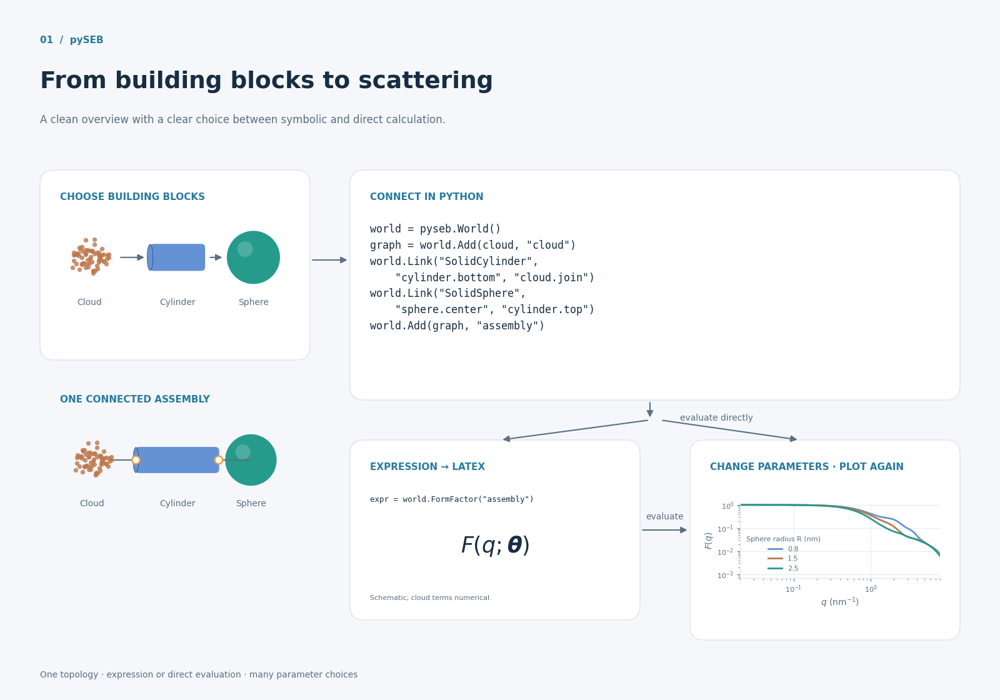
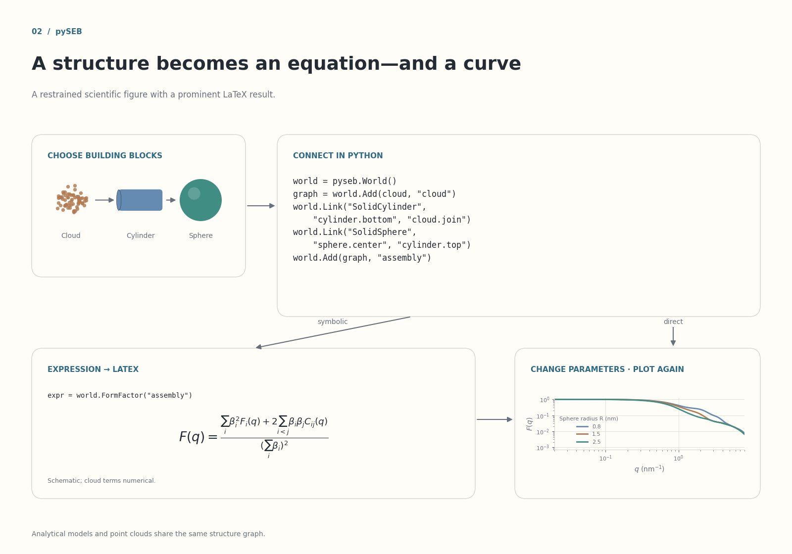
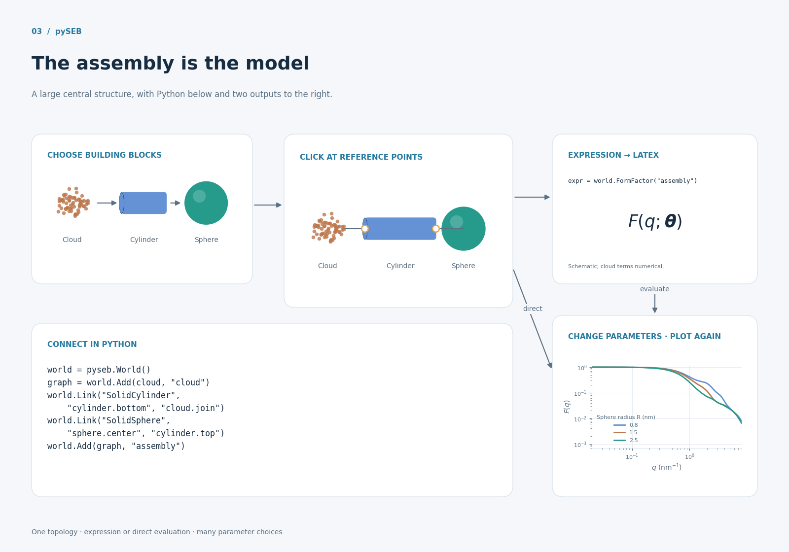
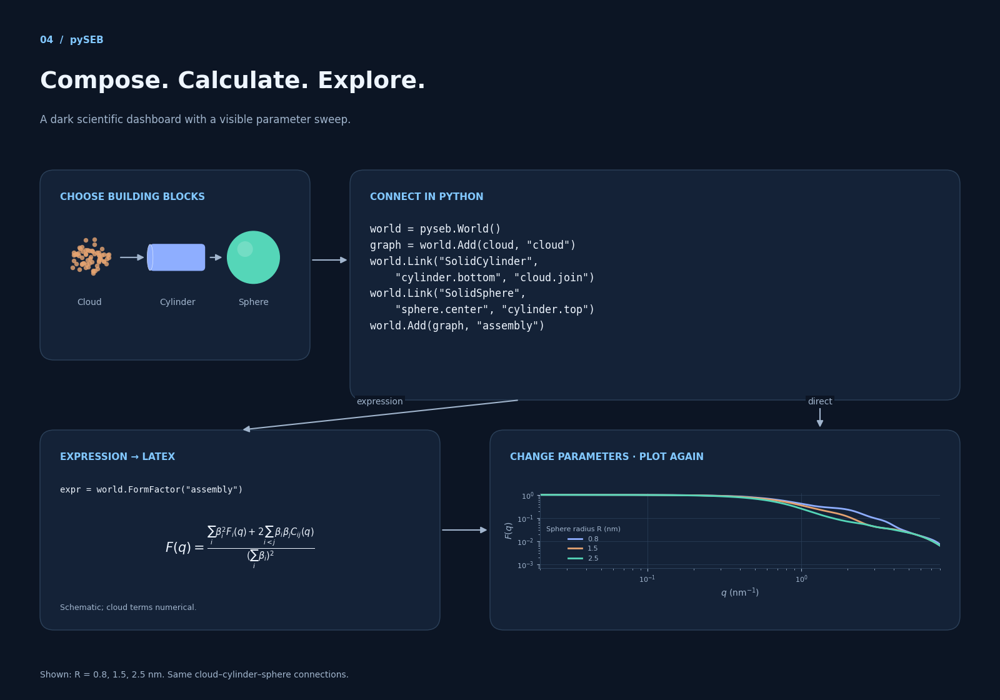
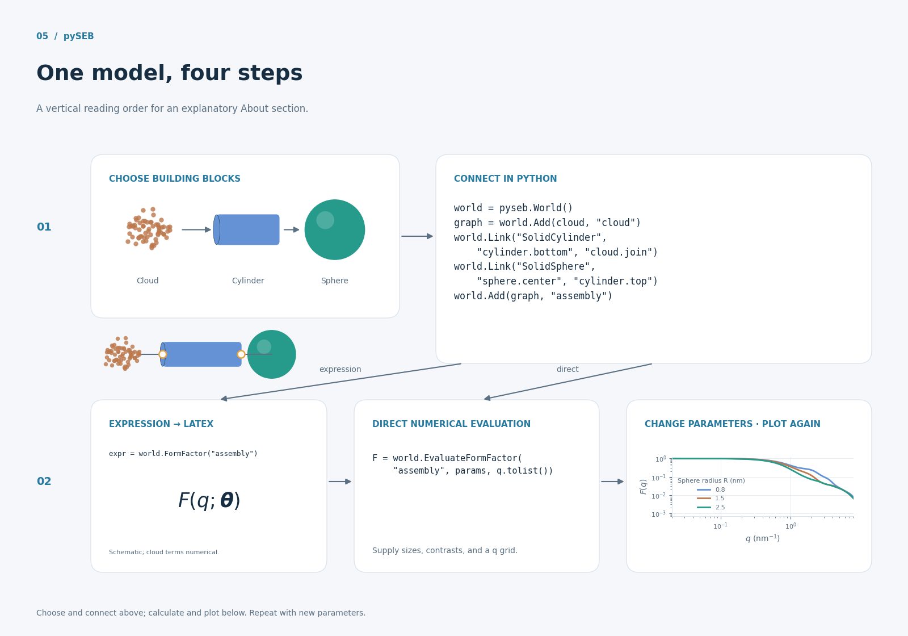
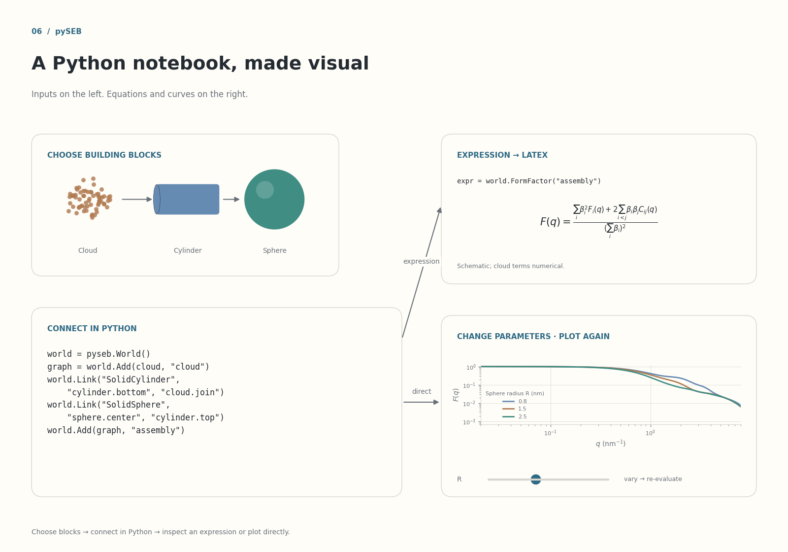
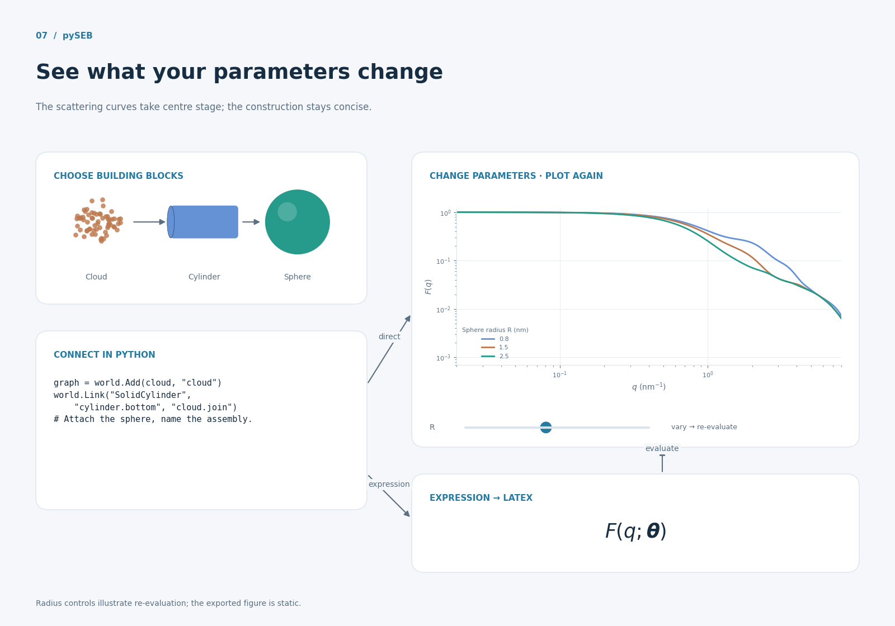
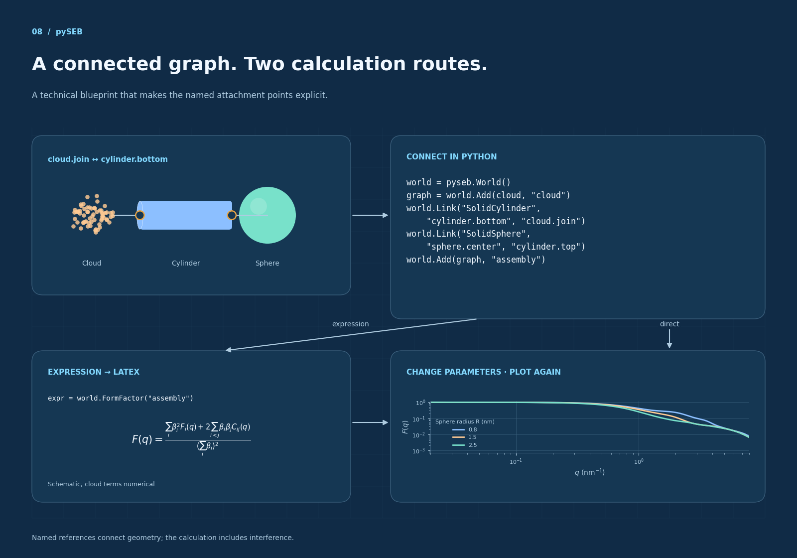
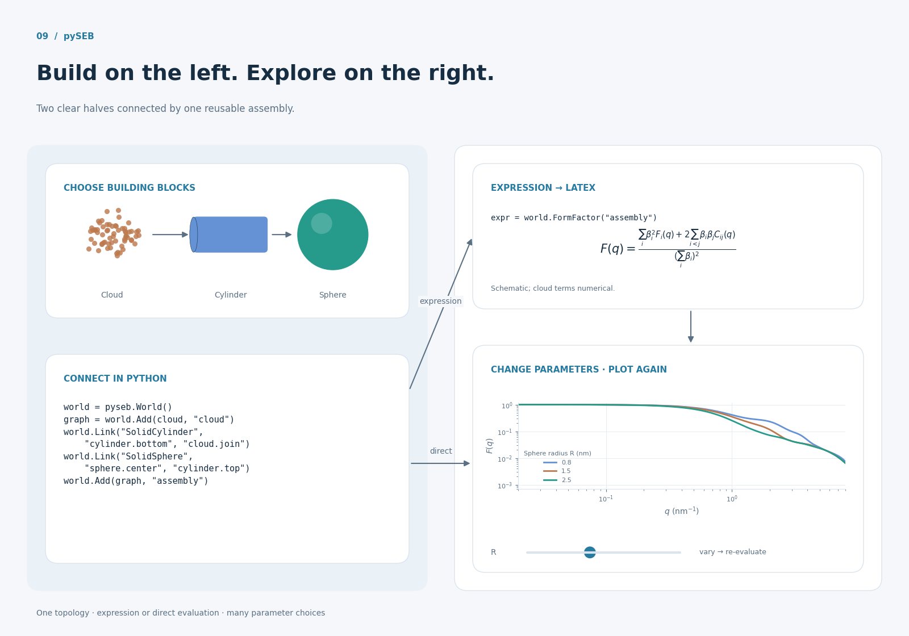
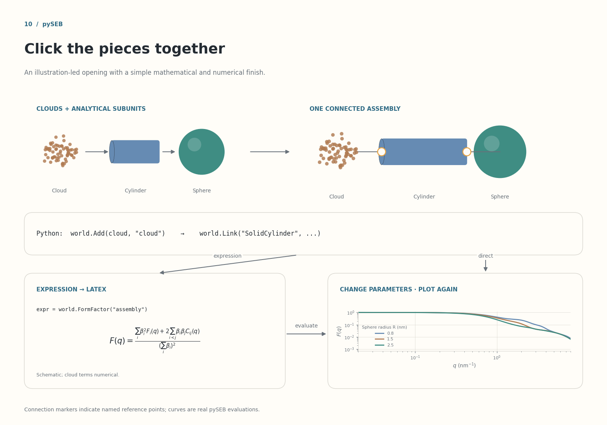

01 · From building blocks to scattering
A clean overview with a clear choice between symbolic and direct calculation.

02 · A structure becomes an equation—and a curve
A restrained scientific figure with a prominent LaTeX result.

03 · The assembly is the model
A large central structure, with Python below and two outputs to the right.

04 · Compose. Calculate. Explore.
A dark scientific dashboard with a visible parameter sweep.

05 · One model, four steps
A vertical reading order for an explanatory About section.

06 · A Python notebook, made visual
Inputs on the left. Equations and curves on the right.

07 · See what your parameters change
The scattering curves take centre stage; the construction stays concise.

08 · A connected graph. Two calculation routes.
A technical blueprint that makes the named attachment points explicit.

09 · Build on the left. Explore on the right.
Two clear halves connected by one reusable assembly.

10 · Click the pieces together
An illustration-led opening with a simple mathematical and numerical finish.
